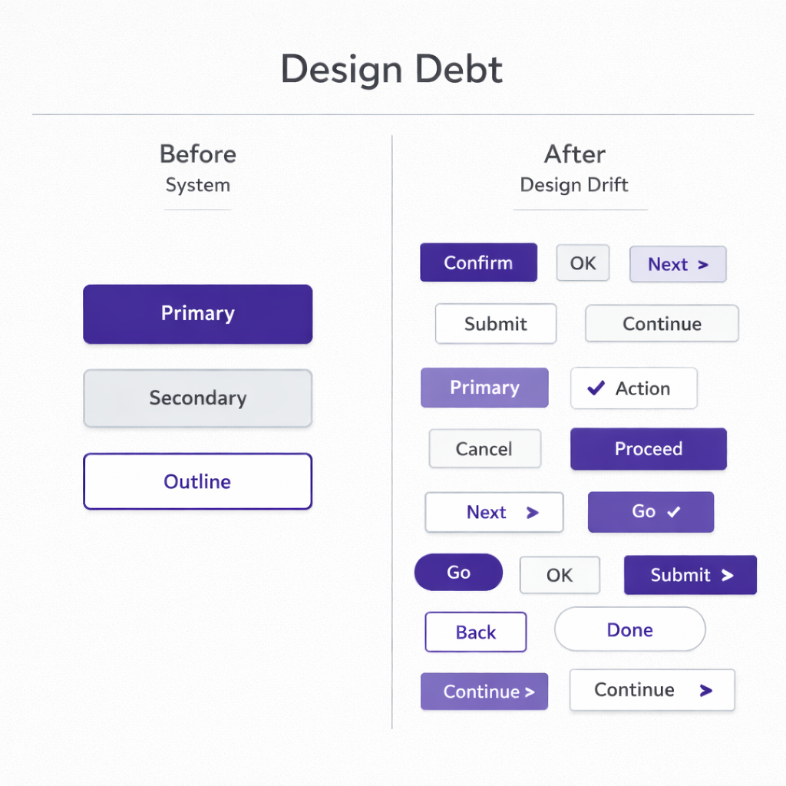

Il est nécessaire de garder le doigt sur le pouls du design de votre interface. Ce n’est pas une formule pour une session stratégique, mais une discipline managériale — une pratique sans laquelle un produit commence à perdre la confiance plus vite qu’il n’ajoute des fonctionnalités.
Quelle que soit la complexité de la solution ou la profondeur de l’architecture, l’utilisateur voit d’abord l’écran. Même en B2B. Même lorsque les décisions sont prises via des KPI et des budgets. La première évaluation se fait au niveau de l’interface.
La couche visuelle est le point d’entrée de la confiance. Une typographie soignée, une hiérarchie structurée, des composants cohérents — il ne s’agit pas d’esthétique. C’est un signal d’ordre. La logique n’a pas encore été analysée, mais la structure est déjà ressentie. Lorsqu’il y a du système à l’écran, il est plus facile de faire confiance au produit.
Lorsque la grille dérive, que les composants entrent en conflit et que les états ne sont pas clairs, une sensation de perte de contrôle apparaît. La fonctionnalité peut être solide, mais la confiance commence à s’éroder. Or, la confiance est un actif immatériel du produit.
L’interface reflète presque toujours l’organisation de l’équipe. Le chaos visuel existe rarement de manière isolée : responsabilités floues, absence de principes, décisions circonstancielles. Une UI non systémique n’est pas un problème esthétique ; c’est le symptôme d’une instabilité organisationnelle.
À l’inverse, une interface systémique signale l’existence d’un cadre. Des standards et de la prévisibilité. Les composants fonctionnent comme une bibliothèque ; les modifications sont introduites selon des règles. Il ne s’agit plus de pixels, mais de discipline opérationnelle.
Interface comme indicateur managérial
S’il y a de l’ordre à l’écran, c’est un reflet de la maîtrise interne. S’il y a du chaos à l’écran, c’est presque toujours la conséquence de l’absence d’un cadre.
L’interface montre s’il existe des principes dans le produit ou seulement des décisions de circonstance. S’il existe une responsabilité de cohérence ou seulement des responsabilités de tâches. C’est pourquoi la systémicité de l’interface est un indicateur de maturité de l’équipe.
Design system comme langage d’équipe
Si l’interface est le lien entre le système et l’utilisateur, le design system est le lien entre les équipes. C’est un protocole : un ensemble de règles et de contraintes qui élimine des dizaines de micro-décisions chaque jour.
Quel bouton est « primary » ? Quels espacements sont autorisés ? À quoi ressemblent les états d’erreur ? Qu’est-ce qui constitue la norme et qu’est-ce qui viole le standard ?
Sans langage commun, chaque décision est rediscutée. Chaque écran devient un cas isolé. Le product manager formule dans un contexte, le designer interprète dans un autre, le développeur implémente dans un troisième, le marketing décrit dans un quatrième.
Le coût transactionnel de l’interaction augmente. Les revues ralentissent. Les validations se complexifient. La vitesse de scaling diminue.

Un langage visuel unifié réduit la variabilité et accélère la collaboration entre les équipes.
Un design system réduit la variabilité là où elle ne crée pas de valeur. Les décisions de base sont automatisées ; l’attention est libérée pour la logique et les scénarios. Quand une équipe passe de cinq à cinquante personnes, l’absence d’un langage visuel formalisé cesse d’être un inconfort et devient un facteur mesurable de perte de vitesse.
Économie du design : ce que cela donne en chiffres
Supposons qu’un produit B2B reçoive 10 000 visites par mois. Le taux de conversion en inscription est de 5 %. De l’inscription au paiement — 20 %. Le panier annuel moyen est de 1 000 €.
L’équipe n’ajoute pas de nouvelle fonctionnalité ; elle systématise l’interface. La conversion passe à 6 %.
Soit 20 000 € supplémentaires par an sans croissance du trafic.
Rétention maintenant. 1 000 clients actifs. Taux de churn — 15 %. Après simplification de l’interface — 12 %.
3 % × 1 000 × 1 000 € = 30 000 € de chiffre d’affaires conservé.
Support. 5 % des clients créent un ticket chaque mois : 50 demandes × 15 € × 12 = 9 000 € par an. Une réduction de 40 % représente environ 3 600 € d’économie.
L’effet cumulé est d’environ 53 600 € par an sans augmentation des dépenses marketing.
Cependant, le design n’est pas la valeur. Les tendances vieillissent ; les effets visuels deviennent du bruit de fond. Si le besoin central n’est pas résolu, polir l’interface ne sauvera pas le produit. Le design ne crée pas de valeur ex nihilo — il amplifie celle qui existe déjà. Et il peut tout autant la détruire.
Comment la dette de design s’accumule
On parle souvent de dette technique. Plus rarement de dette de design. La mécanique est la même. Chaque « on corrigera plus tard », chaque composant temporaire, chaque pattern incohérent est une obligation.
Au début, c’est presque invisible : styles de boutons différents, éléments dupliqués, états instables. Puis cela ralentit le développement. Les nouvelles fonctionnalités sont plus difficiles à intégrer faute de langage commun. Chaque modification déclenche une réaction en chaîne. Un redesign devient un projet coûteux.
La vitesse baisse, la prévisibilité diminue, le funnel commence à fuir.
Coût de la dette de design
Une baisse de conversion de 5 % à 4 % représente déjà –20 000 € par an. Une hausse du churn de 2 points supplémentaires représente encore –20 000 €.
En quelques années, l’absence de systémicité visuelle se transforme en pertes financières directes.
Mécanique cognitive de l’interface
Au cœur de tout cela — la mécanique cognitive.
Une hiérarchie claire n’est pas une question de goût, mais de fonctionnement de la prise de décision. Plus il y a d’alternatives, plus le choix est long et plus la probabilité d’abandon augmente. La manière dont l’information est présentée influence la décision autant que l’information elle-même. La mémoire de travail est limitée.
*Image*
L’utilisateur n’est pas paresseux. Il est contraint.
Chaque élément superflu, chaque transition peu évidente consomme des ressources cognitives. Lorsque ces ressources sont épuisées, une réaction défensive s’active — l’abandon.
Le design gouverne la distribution de l’attention. Il détermine ce qui sera vu en premier, où l’utilisateur s’arrêtera et où il ressentira une surcharge. Une hiérarchie visuelle claire réduit l’entropie et économise l’énergie cognitive. Or, l’économie d’énergie cognitive est directement liée à la confiance : lorsque l’interface est compréhensible, les ressources peuvent être consacrées à la tâche.
Dans ce contexte, le design n’est ni une décoration ni une couche marketing. C’est un coefficient de stabilité du système. Il renforce l’économie du produit ou l’érode progressivement.
L’utilisateur voit l’écran.
L’équipe travaille à travers le système.
L’investisseur regarde les chiffres.
Ces trois niveaux sont liés par le degré de systémicité de l’interface.